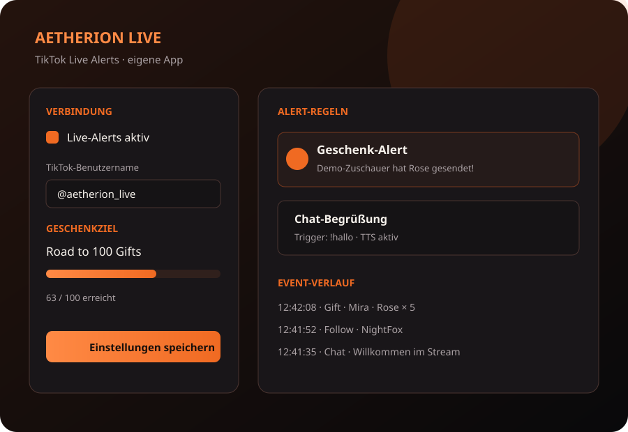
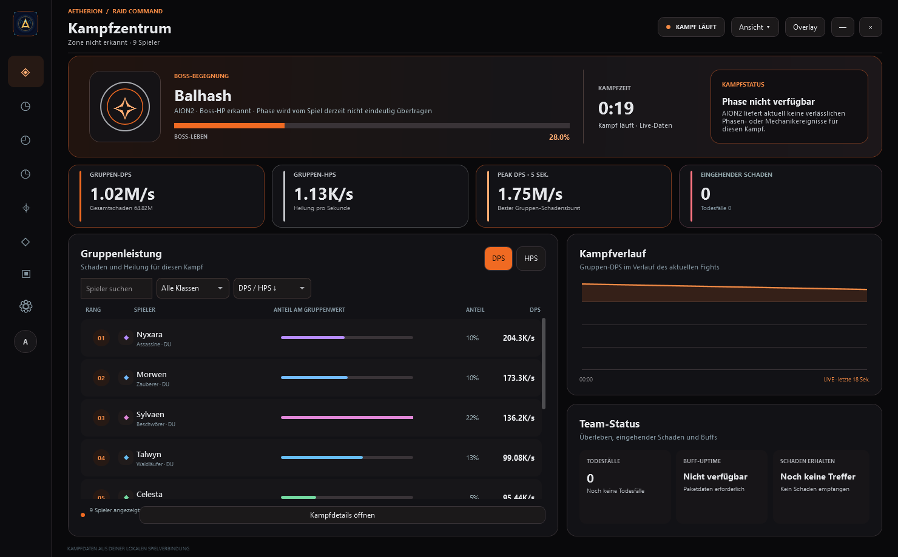
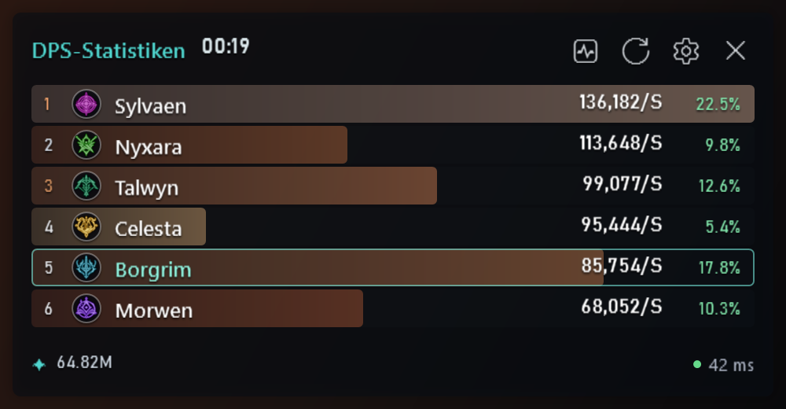
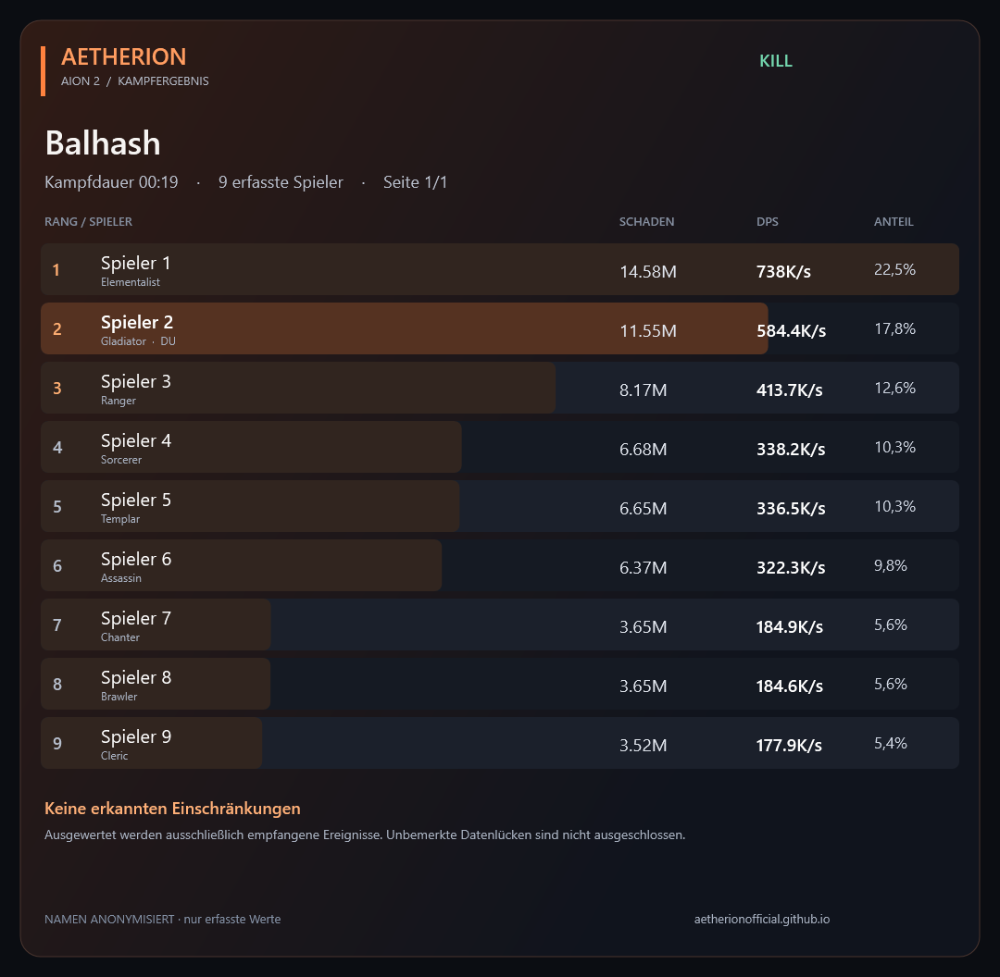
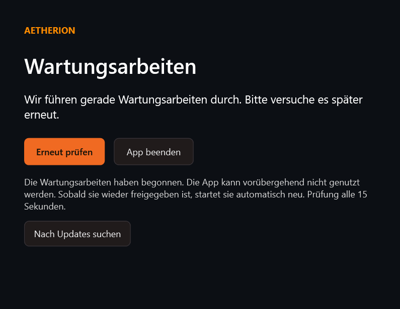
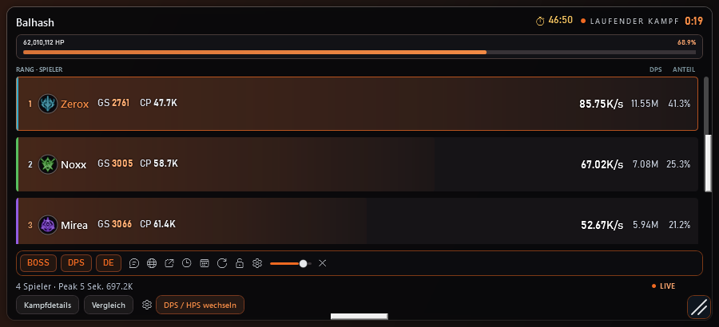
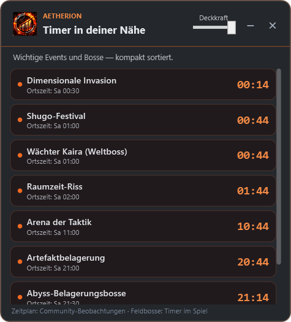

↗
Live Gruppen-DPS & HPS
Verfolge Schaden und Heilung deiner Gruppe während des Kampfes – mit Rang, Anteil und Peak-Werten.
Aetherion Live ist eine eigene App für TikTok-Live-Alerts – getrennt vom DPS Meter. Reagiere auf Geschenke, Follows, Likes, Shares, Abos und Chat-Nachrichten mit Sounds, TTS und animierten Benachrichtigungen.
Die TikTok-Bridge verbindet deinen Livestream sicher per signiertem Webhook mit der App.

Behalte Gruppen-DPS, Heilung und Boss-Lebenspunkte live im Blick. Werte Kämpfe im Detail aus – mit einem Overlay, das du an deinen Spielstil anpassen kannst.

Der Details-Button öffnet die Analyse vor dem randlosen Spiel. Minimierte oder ausgeblendete Details werden wiederhergestellt; ein weiterer Klick schließt sichtbare Details.
Sechs kompakte Spielerplätze, Spielerdetails per Klick, einheitliche Skalierung und numerischer Ping. Dazu eine Rendering-Korrektur für das transparente DPS-Fenster.

Eine eigene Kategorie in den Einstellungen führt zu allen sechs Funktionen. Außerdem öffnet Komfort & Analyse jetzt auch mit einem unbrauchbaren Update-Backup.
Boss-Tagebuch, Heiler-Auswertung, persönliche Ziele, Favoriten und Suchfilter. Dazu kommen gestaltete Discord-Ergebniskarten und verständliche Hinweise zur Datenqualität – jetzt gemeinsam im Kampfbuch & Training.
Echte App-Ansichten mit Beispieldaten. Ältere Kampfdateien bleiben lesbar; fehlende Daten werden gekennzeichnet.

Das Update-Fenster erscheint vor Anmeldung und Wartungsprüfung. Auch während der Wartung bleiben Updates erreichbar. Bereits angemeldete Nutzer erhalten einen klaren Hinweis und die App pausiert bis zur Freigabe.
Für ältere App-Versionen ist ein einmaliges Update erforderlich.

Das kompakte Overlay ist da – zusammen mit persönlichen Profilen, neuen Analysen und Hilfen für Einrichtung und Updates.
Im vollständigen Beitrag findest du auch den Datenstatus für Buff-Uptime und die Voraussetzungen für die Wiederherstellung.

Die wichtigen Kampfdaten live sehen und nach dem Fight nachvollziehen, was passiert ist.
Verfolge Schaden und Heilung deiner Gruppe während des Kampfes – mit Rang, Anteil und Peak-Werten.
Erkenne Boss-Begegnungen und behalte den Kampfstatus sowie verfügbare Lebenspunkte im Auge.
Prüfe Fähigkeiten, Schadensverteilung, Treffer und Rotation nach einem Kampf.
Behalte vergangene Kämpfe und praktische Feldboss-Timer direkt im Meter.
Passe Größe und Transparenz an und platziere das Fenster so, dass es zu deinem Setup passt.
Die installierte Version sucht nach neuen Releases und kann Updates bequem einspielen.
Das Overlay hält die wichtigsten Werte im Blick. Für Details kannst du einzelne Kämpfe genauer untersuchen.


Lade den Installer herunter, richte die Netzwerkerfassung ein und starte das Meter vor dem Spiel.
Lade den Windows-Installer herunter und folge den Schritten. Beim ersten Start wird die benötigte Netzwerkerfassung eingerichtet.
Starte das Meter und anschließend AION 2 Global. Erlaube den Netzwerkzugriff, wenn Windows danach fragt.
Platziere das Overlay, stelle Größe und Deckkraft ein und öffne nach dem Kampf die Analyse für mehr Details.
Du kannst das Meter einmalig pro Nutzer 7 Tage kostenlos testen. Für den weiteren Zugang ist eine kostenpflichtige Lizenz erforderlich. Die Preise findest du oben auf dieser Seite.
Unterstützt werden Windows 10 und Windows 11 in der 64-Bit-Version.
Prüfe, ob das Meter läuft und die Netzwerkerfassung eingerichtet ist. Starte zuerst das Meter, dann das Spiel. Bei Problemen hilft unser Discord weiter.
Installierte Versionen prüfen automatisch auf neue Releases. Du kannst Updates auch manuell auf der Release-Seite herunterladen.
Teste Aetherion DPS Meter eine Woche kostenlos und mach mehr aus deinen Kampfdaten.
1 Woche kostenlos testen ↓Wähle den Zugang, der zu dir passt. Für Kauf und Fragen erreichst du uns über ein Ticket auf Discord.
Einmalig pro Nutzer
Zugang für 30 Tage
Zugang für 90 Tage
Zugang für 365 Tage
Nur auf Einladung
Für Kauf oder Fragen öffne bitte ein Ticket auf unserem Discord.
Preise im Discord anfragen ↗